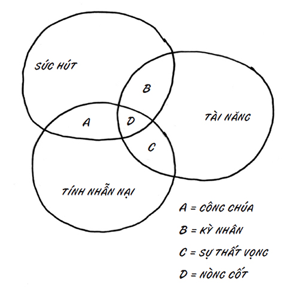

Chúng ta được dạy để trở thành một bánh răng dễ thay thế trong cỗ máy khổng lồ.
Chúng ta được dạy để tập trung vào đường tắt dẫn đến hạnh phúc.
Chúng ta được dạy để ngó lơ công việc hoặc khách hàng của mình.
Và chúng ta được dạy để hòa nhập.
Không điều nào trên đây giúp bạn có được thứ mình xứng đáng.
Chúng ta tin vào một hình mẫu dạy chúng ta phải bám theo hệ thống, tiêu xài tùy thích và tách biệt bản thân với công việc. Chúng ta được dạy rằng cách này hiệu quả, nhưng thực ra là không (không còn nữa). Và sự đứt kết nối này ngăn chúng ta thành công, phá hỏng đà tăng trưởng của xã hội và khiến chúng ta thực sự bị áp lực.
Sống như chúng ta đang sống dường như là điều “tự nhiên”, nhưng thật ra, điều đó chỉ diễn ra gần đây và hoàn toàn do con người dựng nên. Chúng ta tồn tại cùng với tư duy sản xuất doanh nghiệp; nó hoàn chỉnh đến mức bất kỳ ai “lọt lưới” đều là kẻ kỳ quặc. Song, trong vài năm trở lại đây, chúng ta ngày càng thấy rõ rằng những ai không chấp nhận trạng thái tồi tệ nhất của hệ thống hiện tại sẽ có khả năng thành công cao hơn.
Nhà sinh học tiến hóa Stephen Jay Gould từng viết: “Bạo lực, phân biệt giới tính và sự ti tiện nói chung đều mang tính sinh học, vì chúng đại diện cho một tập hợp nhỏ các hành vi trong phạm vi khả dĩ. Nhưng sự hiền hòa, bình đẳng và tử tế cũng mang tính sinh học như thế – và chúng ta có thể chứng kiến tầm ảnh hưởng của chúng gia tăng nếu có thể tạo ra các kết cấu xã hội cho phép chúng phát huy sức mạnh ấy.
Đối với suy nghĩ của ông, tôi xin bổ sung rằng sự phục tùng tầm thường chắc chắn là điều nằm trong khả năng của chúng ta, nhưng nếu chúng ta nắm thế chủ động và thêm chút can đảm, thì khả năng lãnh đạo điệu nghệ sẽ là điều khả thi và hiệu quả không kém (thậm chí hơn thế). Chúng ta được đào tạo để tin rằng sự phục tùng tầm thường là đặc điểm di truyền ở phần lớn dân số, nhưng điều thú vị là đặc điểm này không thể hiện mãi đến vài năm sau khi đến trường.
Mô tả về nhà máy
“Nhà máy” là một thuật ngữ thâm thúy. Nó khiến chúng ta nghĩ đến các dây chuyền lắp ráp xe hơi hay cửa hàng bánh kẹo. Nhưng tôi đang nói về điều rộng hơn thế.
Các văn phòng Bảo hiểm Prudential tại Newark là một nhà máy, và văn phòng Sở Quản lý Cơ giới (Department of Motor Vehicles) gần nhà bạn cũng vậy. Mỗi chi nhánh nhượng quyền McDonald’s đều được thiết lập như một nhà máy đúng nghĩa, và tương tự là trung tâm phân phối Goodwill, nơi chuyên xử lý công đoạn vận chuyển quần áo ra nước ngoài để gây quỹ vì mục đích tốt đẹp.
Tôi định nghĩa nhà máy là một tổ chức hiểu rõ việc họ làm, là nơi mọi người đến để làm những việc họ được bảo và nhận phiếu lương. Các nhà máy từng là xương sống của nền kinh tế của chúng ta trong hơn một thế kỷ, và nếu không có chúng, chúng ta đã không có sự thịnh vượng như ngày hôm nay.
Nhưng điều đó không có nghĩa là bạn sẽ muốn làm việc trong một nhà máy.
Tập trung vào thứ gì, bạn sẽ có thứ đó
Hiện nay, các nhà lãnh đạo của chúng ta đang lo lắng về những vấn đề như sự nóng lên toàn cầu, an ninh, tài nguyên giới hạn và duy trì cơ sở hạ tầng. Còn thế hệ bùng nổ dân số lo về việc già đi và tìm một bác sĩ mà họ có thể chi trả.
100 năm trước, các nhà lãnh đạo lại lo lắng về hai điều dường như rất xa xưa đối với chúng ta ngày nay:
Làm sao tìm đủ công nhân nhà máy;
Và làm sao tránh sản xuất thừa mứa.
CÔNG NHÂN NHÀ MÁY
Nhà máy biến tài nguyên thiên nhiên thành sản phẩm bán được. Họ biến sắt thành thép và biến bắp ngô thành bánh Twinkies. Sự dư thừa tài nguyên thiên nhiên sẽ cắt giảm chi phí và tăng năng suất cho bạn.
Nếu con người là tài nguyên thiên nhiên của nhà máy, thì trên cương vị chủ nhà máy, mục tiêu của bạn là tuyển những người giỏi, lương thấp. Do đó, những người đứng đầu ngành công nghiệp và chính phủ cũng tái thiết xã hội xoay quanh mục tiêu đó.
Điều này nghe như thể là một thuyết âm mưu? Bạn nghĩ các trường đại học kỹ thuật và trường điều dưỡng đến từ đâu? Sao chúng ta cứ phải tiêu tốn vô số thời gian, tiền của để tạo dựng một hệ thống trường học bao phủ cả nước, và hăng hái đến thế vì một hệ thống chỉ huy, kiểm soát kiểu nhà máy nhằm quản lý và sản xuất sinh viên?
Phải, chúng ta cần sự thật, sự khắt khe và hệ thống. Phải, chúng ta cần những người biết cách học các kỹ năng nhất định. Nhưng như thế là không đủ. Đó mới chỉ là bước sơ bộ đầu tiên.
Sự ra đời của nền giáo dục phổ cập (cả công lẫn tư) là một thay đổi sâu sắc trong cách vận hành của xã hội chúng ta, và đó cũng là một thử nghiệm thận trọng nhằm biến đổi văn hóa. Và nó đã mang lại hiệu quả. Chúng ta đã đào tạo được hàng triệu công nhân nhà máy.
TRÁNH SẢN XUẤT THỪA MỨA
Mối băn khoăn to lớn của các nhà tư bản trong bước ngoặt của thế kỷ vừa qua chính là khi các nhà máy ngày càng sản xuất tốt hơn, sẽ không có đủ người mua sản phẩm của họ. Vấn đề không nằm ở khâu sản xuất; mà ở khâu tiêu thụ. Một hộ gia đình điển hình chỉ chi một phần rất nhỏ trong ngân sách của họ.
Trong thập niên 1890, một thiếu niên điển hình chỉ sở hữu vài bộ quần áo, gần như không tiếp xúc với truyền thông và không có món mỹ phẩm nào. Chỉ có những ai thực sự giàu mới sở hữu nhiều phòng ốc chất đầy những thứ họ hiếm khi dùng đến.
Một trong những phụ phẩm tuyệt vời của nền giáo dục phổ cập chính là hiệu ứng mạng lưới giúp hỗ trợ hàng tiêu dùng. Mỗi khi có ai đó trong lớp hay thị trấn sở hữu một chiếc xe hơi, những người khác đều cần một chiếc. Mỗi khi ai đó xây thêm phòng ốc hay có thêm đôi giày thứ hai, thứ ba, bạn cũng sẽ cần thêm.
Chỉ trong phạm vi hai thế hệ, chúng ta đã tạo nên văn hóa tiêu dùng. Trước đây chưa có; nhưng giờ đã có. Bắt kịp láng giềng không phải là khuynh hướng thiên về di truyền. Đó là nhu cầu mới được kiến tạo gần đây.
Tấm biển đặt trước ngôi trường công gần nơi bạn sống có thể có nội dung như sau:
Trường công Maplemere
Chúng ta đào tạo những công nhân nhà máy cho tương lai. Sinh viên tốt nghiệp của chúng ta rất giỏi tuân theo chỉ thị và chúng ta dạy họ về sức mạnh tiêu dùng như một sự trợ giúp để được xã hội chấp thuận.
Chúng ta khó có thể tưởng tượng ra một ngôi trường với tấm biển có nội dung rằng:
Chúng ta dạy mọi người cách phát huy sáng kiến và trở thành những nghệ sĩ xuất chúng, đặt câu hỏi về hiện trạng và tương tác với sự minh bạch. Và sinh viên tốt nghiệp của chúng ta hiểu rằng tiêu dùng không phải là câu trả lời cho các vấn đề xã hội.
Thế nhưng, có lẽ đó chính là điều chúng ta đang cần.
Từ siêu anh hùng đến kẻ tầm thường (và ngược lại)
Trẻ con có thể làm bất cứ điều gì (ngoại trừ bay, vốn là điều chúng thực sự rất muốn làm).
Rất ít người được định sẵn là người bình thường hoặc điển hình.
Thế rồi đâu đó trên đường đời, sự nhồi sọ xuất hiện và chúng ta bắt đầu tìm chỗ lẩn trốn. Chúng ta cố gắng tìm một nơi nào đó mà không ai phát hiện ta thực sự tầm thường đến thế nào.
Chúng ta muốn một công việc đều đều, một điều gì đó xoa dịu những va vấp, một “chỗ mát” sẽ bảo vệ được chúng ta.
Nếu bạn bất an, thì câu trả lời của bạn cho lời kêu gọi trở thành nhân sự cốt cán của tôi hiển nhiên sẽ là: “Tôi không đủ giỏi để trở thành một nhân sự cốt cán.” Câu trả lời được nhồi sọ điển hình sẽ là: những công trình, tuyệt tác vĩ đại và thành quả xuất chúng là lĩnh vực thuộc về người khác. Bạn nghĩ công việc của mình là làm tốt những việc cần làm, mà không ai biết đến.
Tất nhiên, điều này không đúng, nhưng bạn đã được dạy để tin như thế.
Tôi đã may mắn được gặp gỡ và làm việc với hàng nghìn nhân sự cốt cán kiệt xuất. Theo tôi, có vẻ như cách duy nhất để họ tách biệt với những kẻ tuân thủ luật lệ tầm thường là không bao giờ tin vào lối suy nghĩ tự giới hạn mình. Vậy thôi!
Có lẽ họ từng có một người thầy vĩ đại soi lối cho mình. Có lẽ một phụ huynh hoặc người bạn đã thôi thúc họ từ chối sống an nhàn. Nhưng dù gì chăng nữa, sự khác biệt giữa bánh răng và nòng cốt vẫn chủ yếu nằm ở thái độ, chứ không phải sự học hỏi.

Phạm vi dịch chuyển nhỏ bé
Tôi từng chứng kiến tác giả kiêm nhạc trưởng Roger Nierenberg giảng một buổi học và lấy một dàn nhạc giao hưởng làm ví dụ. Đầu tiên, ông yêu cầu cả nhóm chơi một khúc nhạc càng đồng điệu càng tốt. Sau đó, ông bảo họ chơi lại lần nữa, nhưng yêu cầu mỗi người chọn sở trường của riêng mình rồi chơi nhạc theo cách họ muốn, thay vì cách cả nhóm muốn.
Đối với những người nghe không chuyên trong phòng, thật khó để phân biệt hai phiên bản này.
Đó là vì chúng ta đã dạy mọi người bám chặt vào một phạm vi nhỏ bé. Chúng ta không muốn nốt trầm quá trầm, và nốt cao quá cao. Những thành viên trong dàn nhạc giao hưởng này thậm chí không thể mường tượng ra việc đua nhau thoát khỏi chiếc hộp được tạo ra cho họ. Sáng tạo không phải là chọn mặc một chiếc sơ-mi hồng đến văn phòng nơi màu sắc chuẩn là trắng và xanh. Đó chỉ là trò phô trương lòe loẹt mà thôi.
Chúng ta đang chứng kiến điều này ở mọi loại hình tổ chức. Chúng ta yêu cầu ai đó làm một chuyện khác thường và độc đáo, nhưng họ chỉ thay đổi một yếu tố bề mặt nhỏ nhất thay vì tìm ra nguồn gốc của giải pháp sáng tạo. Đây không phải chuyện ngẫu nhiên, mà chính là điều chúng ta dạy họ làm. Cơ hội chỉ đến khi ta thay đổi cuộc chơi, cách tương tác, hay thậm chí câu hỏi.
Nỗi sợ ở trường học
Các nghiên cứu cho chúng ta thấy rằng những điều học được trong hoàn cảnh kinh khủng sẽ được khắc ghi rất lâu. Chúng ta nhớ điều mình học được trên chiến trường, hoặc khi bị phỏng ngón tay do một ấm trà nóng. Chúng ta nhớ những gì mình học được trong các tình huống ta né tránh mối đe dọa thành công.
Trường học đã nhận ra điều này. Họ cần một con đường tắt để “xử lý” hàng triệu sinh viên – học sinh mỗi năm, và họ phát hiện nỗi sợ là lối tắt tuyệt vời để dạy về sự phục tùng. Phòng học trở thành những chiến trường dựa trên nỗi sợ hãi và bài kiểm tra, mặc dù chúng có thể dễ dàng được thiết lập nhằm khuyến khích lối tư duy khác thường mà chúng ta rất cần.
Vậy có gì phải ngạc nhiên khi mọi người học được cách thích nghi, làm các bài kiểm tra chuẩn, cúi đầu và tuân theo chỉ thị? Suốt hàng thập kỷ, trường học đã in sâu điều đó vào trí óc chúng ta – sợ hãi, sợ hãi và sợ hãi hơn nữa. Sợ bị điểm D trừ. Sợ không kiếm được việc làm phù hợp khi ra trường. Sợ không thể thích nghi.
Những giáo viên có thiện ý không muốn làm điều này, nhưng hệ thống thường không cho họ lựa chọn nào khác. Việc tạo ra sự thay đổi tích cực trong lớp học rất dễ gây nản lòng, và nếu không có đủ thời gian và sự hỗ trợ, đó sẽ là nhiệm vụ nan giải.
Việc hướng dẫn mọi người tạo ra thành quả đổi mới, tri thức uyên thâm và tuyệt tác rất tốn thời gian và khó lường. Mặt khác, huấn luyện, thực hành và nỗi sợ hãi là các công cụ hữu hiệu để giảng dạy những điều thực tế, các con số và sự phục tùng. Tất nhiên, chúng ta cần trường học và các giáo viên. Vấn đề là chúng ta cần một ngôi trường được tổ chức nhằm dạy mọi người cách tin tưởng, và các giáo viên được tưởng thưởng vì nỗ lực cao nhất của họ, chứ không phải nỗ lực dễ đoán nhất.
Trường học
Nếu tôi huấn luyện, rèn giũa, chấm điểm và thưởng cho bạn sau nhiều năm học toán bằng phân số, thì khả năng bạn sẽ học phân số là bao nhiêu? Trường học đã làm rất tốt việc dạy học trò làm những điều mà chúng ta định dạy họ làm. Và việc đó đã thành công. Vấn đề là những gì chúng ta đang dạy lại không đúng.
Dưới đây là những gì chúng ta đang dạy bọn trẻ làm (với các mức độ thành công khác nhau):
Hòa nhập;
Tuân theo chỉ thị;
Dùng bút chì số 2;
Chép bài đầy đủ;
Đi học đầy đủ;
Học gạo để thi cử và không lỡ hạn nộp bài;
Viết chữ đẹp;
Ngắt câu;
Mua những món mà lũ trẻ khác đang mua;
Đừng đặt câu hỏi;
Đừng thách thức người nắm quyền;
Hoàn thành yêu cầu tối thiểu để có thời gian làm dự án khác;
Vào đại học;
Có hồ sơ lý lịch tốt;
Đừng thất bại;
Đừng nói bất cứ điều gì khiến mình xấu hổ;
Giỏi thể thao vừa đủ, hoặc có thể cực giỏi ở vị trí tiền vệ phát bóng 9 ;
9
Nguyên văn: quarterback – vị trí quan trọng chuyên chuyền bóng cho các tiền đạo phía trên trong môn bóng bầu dục. (ND)
Tham gia thật nhiều hoạt động ngoại khóa;
Trở thành người hiểu biết rộng;
Cố gắng không để lũ trẻ khác bàn tán về mình;
Khi học xong một chủ đề, hãy tiếp tục.
Còn giờ là những câu hỏi then chốt:
Đặc điểm nào nói trên là chìa khóa để trở thành nhân tố “không thể thiếu”?
Chúng ta có đang xây dựng nên mẫu người mà xã hội cần không?
Vấn đề không nằm ở những người thầy vĩ đại. Những người thầy vĩ đại luôn cố gắng tạo ra nòng cốt. Vấn đề nằm ở hệ thống chuyên trừng phạt những nghệ sĩ và tuyên dương lũ quan liêu.
Dưới đây là những gì Woodrow Wilson 10 nói về hệ thống giáo dục công:
10 Thomas Woodrow Wilson (1856-1924) là Tổng thống thứ 28 của Mỹ. (ND)
“Chúng ta muốn một tầng lớp quy tụ những con người được giáo dục khai phóng, nhưng cũng muốn một tầng lớp khác, cần thiết và lớn hơn nhiều trong mọi xã hội, khước từ những đặc ân của giáo dục khai phóng và tự hòa nhập nhằm thực hiện các công việc thủ công khó khăn nhất định.”
Sau khi giữ lại những thám tử Pinkerton 11 cục súc, hàng loạt nhóm phá hoại đình công và ngay cả lực lượng Vệ binh Quốc gia để dùng trấn áp các cuộc bãi công bằng bạo lực, Andrew Carnegie 12 cho rằng câu trả lời cho tình trạng náo động trong công nhân chính là học vấn giới hạn: “Hãy xem, nếu nhìn kỹ bất cứ đâu trong dòng chảy đầu tiên nhỏ nhất của đời sống quốc gia, ta có thể thấy được phương thuốc tiên cho toàn bộ những căn bệnh của thể chế chính trị đang sôi sục – giáo dục, giáo dục và giáo dục.”
11 Cơ quan Thám tử Quốc gia Pinkerton, được thành lập vào thập niên 1800 để giúp các cơ quan thực thi pháp luật truy lùng tội phạm, nhưng sau đó bị vướng vào các tranh chấp lao động khét tiếng của nước Mỹ công nghiệp. (ND)
12 Andrew Carnegie (1835-1919) là doanh nhân người Mỹ gốc Scotland được mệnh danh là Vua Thép. Ông là người giàu thứ ba trong lịch sử thế giới. Ông đã góp phần làm cho ngành công nghiệp sản xuất thép của Mỹ phát triển mạnh mẽ vào cuối thế kỷ XIX. (ND)
Mô hình này rất đơn giản. Giới tư bản cần những công nhân dễ bảo, những người có năng suất và sẵn sàng làm việc để nhận lương thấp hơn thứ giá trị do năng suất của họ tạo ra. Khoảng cách giữa đồng lương họ được nhận và những gì giới tư bản có được chính là lợi nhuận.
Cách tốt nhất để gia tăng lợi nhuận chính là gia tăng cả năng suất lẫn sự phục tùng của công nhân nhà máy. Và như Carnegie đã nhận ra, cách tốt nhất để làm điều đó chính là xây dựng một hệ phức hợp giáo dục-công nghiệp đồ sộ nhằm dạy công nhân vừa đủ kiến thức để khiến họ hợp tác.
Không phải ngẫu nhiên mà trường học lại giống với công sở, không phải ngẫu nhiên mà tại đó có giám thị, các quy định, những bài kiểm tra và kiểm soát chất lượng. Bạn làm tốt, bạn sẽ có công việc mới (được lên lớp), và cứ tiếp tục làm tốt, bạn sẽ có công việc thực sự. Còn nếu làm kém, không hòa nhập và nổi loạn – bạn sẽ bị trục xuất khỏi hệ thống.
“Tôi học giỏi ở trường”
Về cơ bản, đây là mệnh đề khác với: “Tôi từng học giỏi ở trường nên tôi sẽ làm việc rất tốt cho anh.” Điều cốt yếu được đo lường ở trường học là bạn có học giỏi ở trường hay không mà thôi.
Học giỏi ở trường là một kỹ năng tuyệt vời nếu bạn có ý định đi học cả đời. Đối với phần còn lại trong chúng ta, học giỏi ở trường chỉ là chuyện vặt như giỏi chơi ném đĩa. Điều đó rất hay, nhưng không phù hợp trừ khi sự nghiệp của bạn liên quan đến bài tập về nhà, dò sách giáo khoa để tìm những đáp án mà cấp trên của bạn đã biết từ trước, tuân theo hướng dẫn và sau đó nhai lại những thông tin đó với khả năng xử lý hạn chế của bạn – trong điều kiện áp lực cao; hoặc – trong trường hợp ném đĩa – trừ khi công việc của bạn bao gồm chuyện ném một tấm nhựa tròn nặng 165 gram xa nhất có thể.
Những đóng góp của trường học thường quá dư thừa. Mặt khác, các ngôi trường tốt nhất cũng là nơi tuyển chọn gắt gao những người có đủ thái độ lẫn tài năng. Vào trường và ra trường là minh chứng gửi đến con người bạn trước khi vào trường. Nhiều người thành công đã bước trên con đường đó bất chấp nền giáo dục tiên tiến mà họ nhận được – chứ không phải nhờ có nó.
Họ nên dạy gì trong trường học
Chỉ có hai điều:
---❊ ❖ ❊---
Giải quyết những vấn đề thú vị;
Lãnh đạo.
---❊ ❖ ❊---
GIẢI QUYẾT NHỮNG VẤN ĐỀ THÚ VỊ
“Thú vị” là cụm từ mấu chốt. Trả lời những câu hỏi như “Cuộc chiến 1812 diễn ra khi nào?” là điều vô nghĩa trong một thế giới luôn-có-sẵn Wikipedia. Sẽ hữu ích hơn nhiều nếu ta có thể trả lời kiểu câu hỏi mà việc dùng Google không giúp gì được. Những câu hỏi kiểu như: “Tôi nên làm gì tiếp theo?”
Trường học kỳ vọng những sinh viên giỏi nhất sẽ tốt nghiệp để trở thành các nhà lượng giác học lão luyện. Họ sẽ được mọi người thuê về để tính chiều dài cạnh huyền của một tam giác vuông nhất định. Quả là lãng phí! Lý do duy nhất để học lượng giác là vì nó là một câu hỏi thú vị đáng để giải quyết trong chốc lát. Nhưng sau đó, chúng ta nên tiếp tục, không ngừng tìm kiếm những bài toán mới thú vị hơn câu hỏi đó. Ý nghĩ cứ phải giải nó như con vẹt – tức là liên tục lặp lại một phương pháp cho thấm – hoàn toàn lãng phí thời gian.
LÃNH ĐẠO
Lãnh đạo là một kỹ năng, chứ không phải tài năng thiên phú. Bạn không bẩm sinh đã có nó, mà học được nó. Và trường học có thể dạy thuật lãnh đạo dễ dàng như tìm cách dạy sự phục tùng. Trường học có thể dạy chúng ta trí thông minh xã hội để cởi mở với các mối quan hệ, cũng như hiểu rõ những yếu tố cấu thành “bộ lạc”. Dù trường học tạo đầu ra cho các nhà lãnh đạo bẩm sinh, nhưng lại không dạy kỹ năng này. Mặc dù hiện nay, tài lãnh đạo đáng giá hơn sự phục tùng rất nhiều.
Truy tìm những người thầy vĩ đại
Những người thầy vĩ đại thật đáng quý. Còn các giáo viên tồi tệ lại gây ra những thiệt hại tồn tại vĩnh viễn.
Chúng ta cần tái thiết trường học để giải phóng những người thầy vĩ đại khỏi các bài kiểm tra, báo cáo và công việc bận rộn, cũng như tống khứ các giáo viên tồi tệ. Tôi biết điều này nghe thật viển vông, nhưng vì sao nên làm như vậy? Khi trường học được tổ chức để sản xuất ra công nhân lao động, các giáo viên tồi tệ chính là người chúng ta cần. Còn lúc này, họ thật nguy hiểm.
Đừng đổ lỗi cho giáo viên. Hãy đổ lỗi cho hệ thống doanh nghiệp vẫn đang đào tạo các công nhân dễ bảo giỏi làm bài kiểm tra.